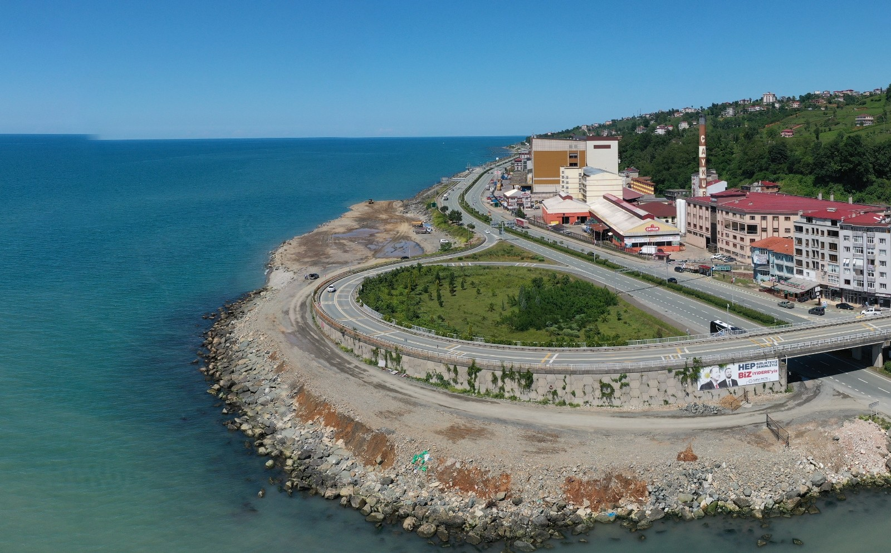

Coğrafi yapının yarattığı koşullar dolayısıyla köy ve kasaba arasında bir profile sahiptir. Genel iş kaynakları, tarım, hayvancılık, balıkçılık ve çay tarımıdır. Çay tarımında genellikle kadınlar çalışırken, erkekler de bölge sayısı yaklaşık 15'i bulan çay fabrikalarında çalışmaktadır. Ayrıca ilçenin sahilde bulunması balıkçılık yapılmasına da olanak vermiştir.İyidere nüfusunu etnik köken bakımından başta Türkler ve Laz kökenli aileler oluşturmaktadır.
yidere yeşilliklerin sonsuz olduğu bir yer gibidir. Yaklaşık yüzölçümüm 25 kilometre karedir. Trabzon sınırına çok yakındır. Rize iline mesafesi 14 km'dir. Doğusunda yine Rize ilinin Derepazarı ilçesi batısında ise Trabzon ilinin Of ilçesi bulunmaktadır. Güneyinde Rize'nin Kalkandere ilçesi kuzeyinde ise Karadeniz sahili vardır. Doğu ve güneye gidildikçe rakım yükselir. Kıyıda iklim iç bölgelerine göre daha ılımandır. Ortalama sıcaklık 14 derece, ortalama yıllık yağış miktarı ise metrekareye 230 kilogramdır.Her ne kadar yağış miktarı Türkiye ortalamasına göre fazla olsa da özellikle sahilleri oldukça ilgi çekicidir.Turistlerin sıklıkla ziyaret ettiği Metropol İlçe İyidere, plajlarıyla namını birkaç sene sonra tüm Türkiye'de duyuracağına kesin gözüyle bakılıyor.Ayrıca son yapılan ölçümlerde deniz suyunun son derece temiz olduğununda altı çiziliyor.
MÖ 700'lü yıllarda Miyetoslularca kurulmuş zamanla sırasıyla Roma, Bizans ve Trabzon İmparatorluğu egemenliği altında kalmıştır. Fatih Sultan Mehmet tarafından 1461 yılında Osmanlı topraklarına katılmıştır. Eski adı "Aspet" olarak bilinmektedir. Aspet ismi Eski Yunanca "T'aspeta" kelimesinden geldiği sanılmaktadır. İyidere ismi ise ilçenin içinden geçmekte olan eski adı Yunanca "Kalapotamos" çayının Türkçeye tercüme edilmesi ile bugüne gelmiştir. Osmanlı dönemindeyken nahiye durumunda olan ilçe, cumhuriyetin ilanından sonra bucak durumuna gelmiştir.